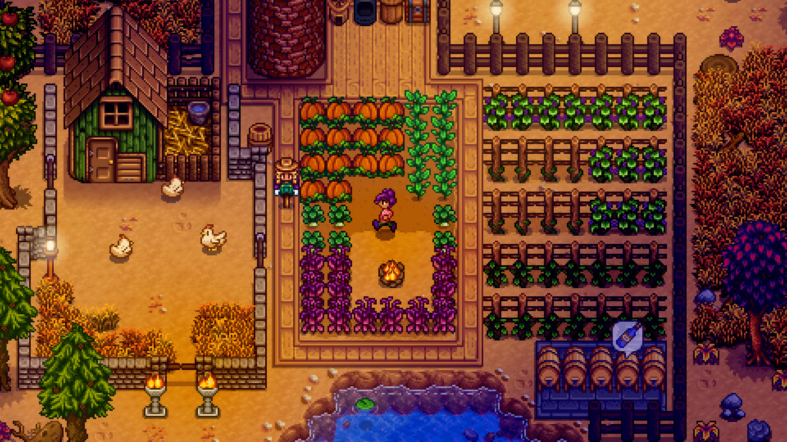
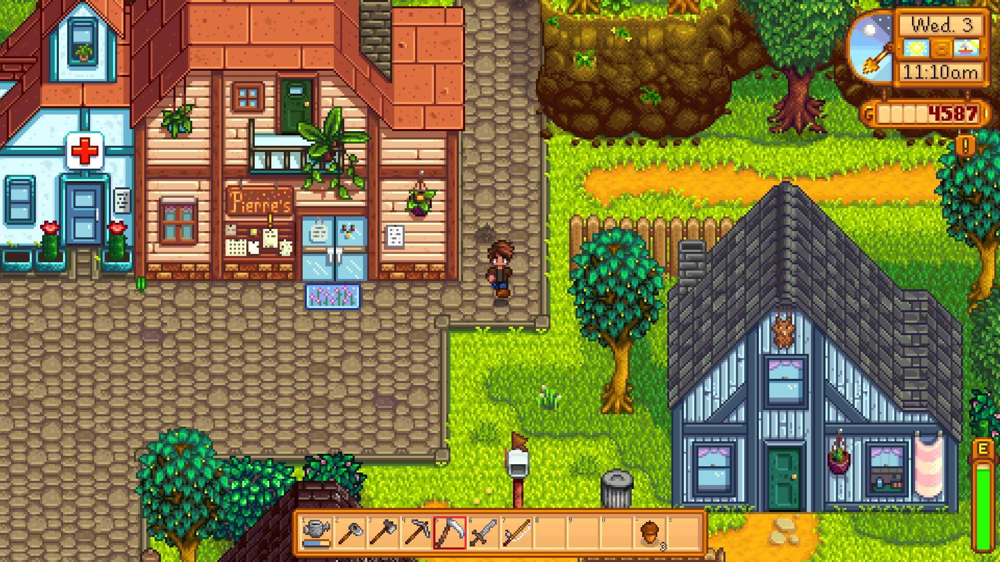
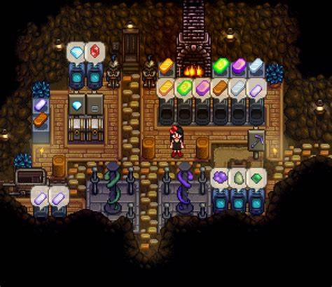

Stardew Valley





Lançamento: Fevereiro de 2016
Plataformas: PC, PlayStation 4, Xbox One, Nintendo Switch, dispositivos móveis, e outros
Stardew Valley é um renomado jogo indie criado por Eric "ConcernedApe" Barone. Ambientado em um vilarejo encantador, o jogo segue a jornada de um novo residente que herda uma fazenda abandonada e a transforma em um empreendimento próspero.
Características Principais
- Gestão de Fazenda: Plante, colha e crie animais para expandir e aprimorar sua fazenda. O ciclo das estações e as mudanças climáticas afetam diretamente suas atividades.
- Exploração e Aventura: Explore cavernas em busca de minerais, batalhe contra criaturas e descubra segredos ocultos do mundo ao redor.
- Relacionamentos e Interações: Faça amigos, participe de festivais locais, e desenvolva relacionamentos com os habitantes da vila. É possível até casar e formar uma família dentro do jogo.
- Pesca e Artesanato: Pesque em diversos corpos da água e crie itens úteis para aprimorar sua vida na fazenda.
- Liberdade e Personalização: Personalize sua fazenda e escolha como deseja administrar suas atividades, oferecendo uma ampla gama de opções para os jogadores.
Stardew Valley se destaca por sua jogabilidade envolvente e a liberdade que oferece, criando uma experiência imersiva e adaptável ao estilo de cada jogador. Com uma comunidade ativa e atualizações constantes, continua sendo um favorito no gênero de simulação de vida.